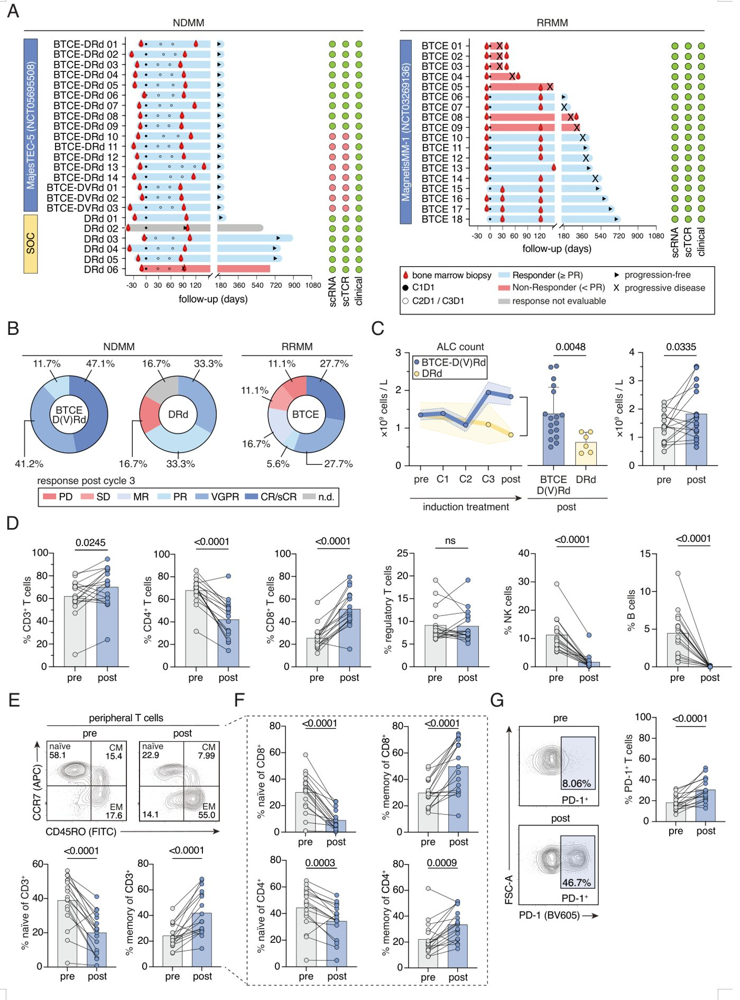
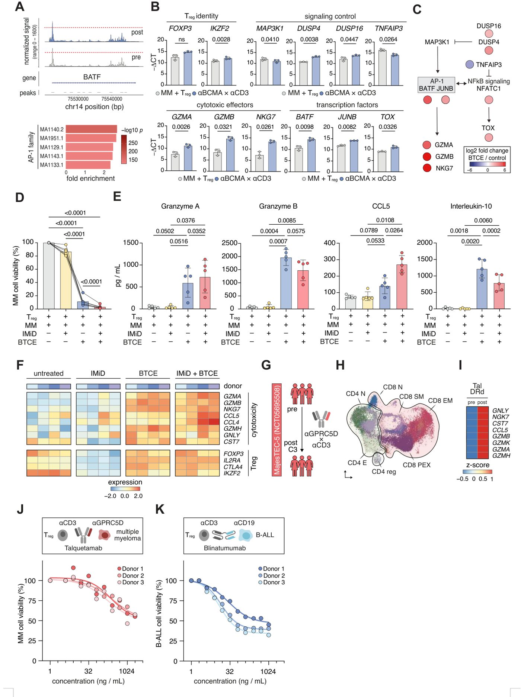

Immunitetning yashirin kuchi: regulyator T-hujayralar saratonga qarshi kurashni boshlaydi


Rasmning to'liq tavsifi
1-rasm. Birinchi qator BTCE terapiyasi yangi tashxis qo'yilgan mielomada klinik javoblarni kuchaytiradi va periferik T-hujayralar tarkibini qayta shakllantiradi. (A) Yangi tashxis qo'yilgan ko'p sonli mieloma (NDMM) (chapda) va retsidivlanuvchi/refrakter ko'p sonli mieloma (RRMM) (o'ngda) kohortalari uchun davolash muddatlari, klinik javoblar va namuna yig'ish nuqtalarini ko'rsatuvchi suzuvchi grafiklar. BTCE — bispesifik T-hujayra engayeri. C — sikl. D — kun. DRd — daratumumab + lenalidomid + deksametazon. DVRd — daratumumab + bortezomib + lenalidomid + deksametazon. PR — qisman javob. (B) NDMM (BTCE-DRd, n=14; BTCE-DVRd, n=3; DRd, n=6) va RRMM (n=18) bilan og'rigan bemorlar uchun 3-siklidan keyin javob toifalari taqsimoti. Javob toifalari quyidagilarni o'z ichiga oladi: PD (progressiv kasallik), SD (barqaror kasallik), MR (minimal javob), n.d. (bajarilmagan yoki baholanmagan), PR (qisman javob), VGPR (juda yaxshi qisman javob) va CR/sCR (to'liq javob/qat'iy to'liq javob). (C) BTCE-D(V)Rd va DRd davolash kohortalari uchun vaqt o'tishi bilan periferik qondagi mutlaq limfotsitlar soni (ALC) (chapda); BTCE-D(V)Rd (n=17) va DRd (n=6) o'rtasida davolanishdan keyingi (C3 dan keyin) ALC taqqoslanishi (o'rtada); va BTCE-D(V)Rd (n=16) uchun davolanishdan oldingi (C1 dan oldin) va keyingi (C3 dan keyin) juftlashtirilgan ALC (o'ngda). P-qiymatlari ko'rsatilgan taqqoslashlar uchun keltirilgan va mos ravishda Mann-Uitni U-testi va Uilkoxonning juftlashtirilgan belgili ranglar testi bilan hisoblangan. (D) BTCE davolashidan oldin (C1 dan oldin) va keyin (C3 dan keyin) periferik qondagi asosiy limfotsitlar subpopulyatsiyalarining oqim sitometrik miqdori, shu jumladan tirik PBMC ichidagi CD3⁺ T-hujayralari, NK-hujayralari va B-hujayralari foizi, CD3⁺ T-hujayralari ichidagi CD4⁺ T-yordamchi hujayralari va CD8⁺ sitotoksik T-hujayralari foizi, va CD4⁺ T-hujayralari ichidagi FOXP3⁺ Treg hujayralari foizi. (E) CCR7 va CD45RO ifodasi bilan aniqlangan naiv, markaziy xotira (CM) va effektor xotira (EM) T-hujayralarining vakillik FACS grafiklari va miqdori. (F) CD4⁺ va CD8⁺ T-hujayra bo'limlaridagi naiv, CM va EM subpopulyatsiyalarining miqdori. (G) Davolanishdan oldin (C1 dan oldin) va keyin (C3 dan keyin) periferik qon CD3⁺ T-hujayralarida PD-1 ifodasining vakillik FACS grafigi va miqdori. (D–G) panellari uchun statistik ahamiyatlilik juftlashtirilgan t-testlar yordamida baholandi. Juftlashtirilgan ma'lumotlar BTCE-D(V)Rd kohortasidan n=17 bemor uchun mavjud edi.
Regulyator T-hujayralar (Tregs) an'anaviy ravishda immunitet tizimining «tinchlikparvarlari» hisoblanadi. Biroq, yangi tadqiqot shuni ko'rsatadiki, saraton terapiyasida qo'llaniladigan bispesifik antitanachalar ularning vazifasini tubdan o'zgartiradi. O'simtani himoya qilish o'rniga, bu hujayralar uni yo'q qilishga kirishadi va kasallikka qarshi kurashda faol ishtirok etadi.
Asosiysi
- BTCE regulyator T-hujayralarni sitotoksik effektlarga aylantiradi
- Jarayon AP-1 va BATF omillari orqali xromatinni qayta qurishga asoslangan
- Immunomodulyatorlar bu hujayralarning faolligini oshiradi
Batafsil
Bispesifik T-hujayra engeyjerlari (BTCE) — bu o'simta hujayralari va T-limfotsitlarni bir-biriga yaqinlashtirib, saratonni yo'q qilish jarayonini ishga tushiradigan preparatlardir. Tadqiqotchilar MajesTEC-5 klinik sinovi doirasida ko'p miyelomali bemorlardan olingan suyak iligi va qon namunalarini tahlil qilishdi. Ma'lum bo'lishicha, BTCE ta'sirida FOXP3 markerini ifodalovchi regulyator T-hujayralar (Tregs) qayta dasturlash jarayonidan o'tadi. Ularning yadrosida AP-1 va BATF transkripsiya omillari boshqaradigan xromatinni qayta qurish jarayoni sodir bo'ladi, bu ularni sitotoksik effektlarga aylantiradi.
Laboratoriya tajribalarida bunday «qayta o'qitilgan» Tregs o'zlarining asosiy identifikatsiya belgilarini saqlab qolgan holda, o'simta hujayralarini bevosita yo'q qilish qobiliyatini namoyish etdi. Immunomodulyator dorilarni (IMiDs) qo'shish bu sitotoksik ta'sirni yanada kuchaytiradi. Ushbu kashfiyot immunitet tizimining plastikligi haqidagi tushunchani o'zgartiradi va immunitetni bostiruvchi hujayralarni ham saratonga qarshi kurashga yo'naltirish mumkinligini ko'rsatadi.
Cheklovlar
Ushbu tadqiqot hali taqrizdan o'tmagan preprint hisoblanadi va cheklangan klinik sinov ma'lumotlariga asoslangan.
Maqolaning batafsil tahlili
Annotatsiya
Bispesifik T-hujayra engagerlari (BTCE) B-hujayrali malign o'smalarni davolashda katta yutuqlarga erishdi, ammo ularning noan'anaviy T-hujayra zanjirlariga ta'siri va kombinatsiyalangan davolash strategiyalari hali ham to'liq o'rganilmagan. Ushbu tadqiqotda CD3-yo'naltirilgan BTCE inson FOXP3⁺ regulyator T-hujayralarini (Tregs) AP-1 omili tomonidan boshqariladigan gibrid sitotoksik holatga o'tkazishi va bu o'sma hujayralarini yo'q qilishga yordam berishi ko'rsatilgan.
Muhim
BTCE regulyator T-hujayralarini sitotoksik effektlarga qayta dasturlaydi, bu o'sma hujayralarini yo'q qilishga hissa qo'shadi.
Mualliflar 2-faza klinik sinovida (GMMG-HD10/DSMM-XX/MajesTEC-5) qatnashgan, yangi tashxis qo'yilgan ko'p miyelomali (NDMM) bemorlardan olingan suyak iligi va periferik qon namunalarini tahlil qildilar. Tadqiqotda yagona hujayrali RNK, ATAC va TCR sekvenlash, shuningdek, funksional va metabolik profillash usullari qo'llanildi.
Izoh
ATAC-seq — bu xromatinning ochiqligini tahlil qilish usuli bo'lib, hujayrada qaysi genlar faol ekanligini aniqlashga yordam beradi.
BTCE asosidagi induksion terapiya sitotoksik CD8⁺ klonlarining kengayishini va GZMA, GNLY va NKG7 ifodalovchi Treg populyatsiyasining paydo bo'lishini rag'batlantiradi. Ushbu hujayralar BATF-AP-1 atrofidagi xromatinni qayta qurish orqali sitotoksik genlarning boyitilgan signaturalari bilan ajralib turadi. In vitro tajribalarida ushbu Tregs o'sma hujayralarini lizis qilish qobiliyatiga ega ekanligi va bu jarayon doza hamda nishonga bog'liqligi tasdiqlandi. Shu bilan birga, hujayralar klassik Treg belgilarini saqlab qolgan holda effektor fenotipga qarab metabolik qayta qurilishdan o'tadi.
Ehtiyot bo'ling
In vitro kuzatilgan effektlar bemorlardagi o'sma mikro muhitining murakkabligini to'liq aks ettirmasligi mumkin.
Immunomodulyator dorilar (IMiD) ushbu sitotoksik dasturni boshlamaydi, lekin uni miqdoriy va sifat jihatidan kuchaytiradi, bu BTCE-IMiD kombinatsiyalangan sxemalarining samaradorligini asoslaydi. Treglarning bu plastisitivligi BCMA, GPRC5D va CD19 ga yo'naltirilgan BTCElarda, ham ko'p miyeloma, ham o'tkir limfoblastik leykemiya holatlarida kuzatiladi. Ushbu topilmalar sitotoksik Treglarni biomarkerlar va immunoterapiyani optimallashtirish vositalari sifatida ishlatish uchun yangi imkoniyatlar ochadi.
Kirish
T-hujayralarni yo‘naltiruvchi immunoterapiya
T-hujayralarni qayta yo‘naltiruvchi immunoterapiya saratonni davolash landshaftini tubdan o‘zgartirmoqda va avtoimmun kasalliklar sohasiga ham kirib bormoqda. Bunda bispesifik T-hujayra engeyjerlari (BTCE) asosiy rol o‘ynaydi — ular o‘sma antigeni va T-hujayralardagi CD3 bilan bir vaqtda bog‘lanib, sun’iy immun sinapsini hosil qiladi va klassik antigen taqdimotidan qat’i nazar, sitotoksiklikni qo‘zg‘atadi. BCMA yoki GPRC5D ga yo‘naltirilgan BTCE preparatlari ko‘p sonli oldingi davolash kurslarini olgan mieloma, B-hujayrali limfomalar va o‘tkir limfoblastli leykemiya bilan og‘rigan bemorlarda chuqur javob reaksiyalarini keltirib chiqardi.
Muhim
BTCE terapiyasi yuqori samaradorlikka ega, ammo davolashga chidamlilik mexanizmlari va uzoq muddatli ta’sir mexanizmlari hali to‘liq o‘rganilmagan.
Javob reaksiyalari har doim ham barqaror emas va rezistentlik mexanizmlari paydo bo‘lmoqda. Ilgari ma’lum bo‘lishicha, klinik javob CX3CR1⁺ sitotoksik CD8⁺ T-hujayralarining ko‘payish qobiliyatiga bog‘liq, charchagan (exhausted) fenotiplar esa davolash muvaffaqiyatsizligi bilan bog‘liq. Biroq, BTCE ta’siri ostida regulyator T-hujayralarning (Tregs) taqdiri va funksiyasi yaxshi aniqlanmagan. FOXP3 ifodalovchi Tregs periferik tolerantlik uchun zarur, ammo o‘smalar ulardan immunitetni bostirish uchun foydalanadi.
Izoh
Tregs (regulyator T-hujayralar) — bu immun tizimining haddan tashqari faolligini nazorat qiluvchi va o‘z to‘qimalariga nisbatan tolerantlikni saqlovchi maxsus T-limfotsitlar populyatsiyasi.
BTCE terapiyasi vaqtida regulyator T-hujayralarning qayta dasturlanishi
Biz BTCE terapiyasi T-hujayralar tarkibini qanday o‘zgartirishini aniqlash uchun yagona hujayrali ko‘p o‘lchovli tahlil (multi-omics) va funksional modellashtirishni birlashtirdik. MajesTEC-5 klinik sinovida BCMA×CD3 BTCE bilan davolangan mielomali bemorlarning suyak iligi va periferik qoni tahlil qilindi. Natijalar shuni ko‘rsatdiki, BTCE terapiyasi nafaqat sitotoksik CD8⁺ klonlarning kengayishini, balki FOXP3⁺ Tregs hujayralarining alohida sitotoksik holatga qayta dasturlanishini ham keltirib chiqaradi.
Ehtiyot bo'ling
Tadqiqot klinik namunalarga asoslangan, shuning uchun kuzatilgan o‘zgarishlarning sabab-oqibat bog‘liqligini talqin qilishda ehtiyotkorlik talab etiladi.
Ushbu hujayralar GZMA, GZMB, GNLY, NKG7 va TBX21 ifodalashni boshlaydi, metabolik qayta qurilish va BATF-AP-1 markazli xromatin remodelyatsiyasini namoyon etadi. BTCE ta’siridagi Tregs o‘zining asosiy belgilarini saqlab qolgan holda, o‘sma hujayralariga qarshi to‘g‘ridan-to‘g‘ri litik faollikka ega bo‘ladi. Bu sitotoksik konversiya immunomodulyator dorilar bilan kuchayadi. Ushbu ma’lumotlar Tregs hujayralarining saraton immunoterapiyasidagi passiv supressor sifatidagi an’anaviy qarashlarini shubha ostiga qo‘yadi va ularning faol effektorgacha qayta yo‘naltirilishi mumkinligini ko‘rsatadi.
Natijalar
BTCE bilan kuchaytirilgan induksion terapiya yuqori o‘sma yukini yengadi va yangi tashxis qo‘yilgan miyelomada tizimli T-hujayra immunitetini qayta shakllantiradi
Ushbu tadqiqot Majes-TEC-5 (NCT05695508) klinik sinovlaridan olingan ma’lumotlarga asoslangan bo‘lib, unda BCMA×CD3 bispesifik T-hujayra engagerlari (BTCE) bo‘lgan teklistamab yangi tashxis qo‘yilgan ko‘p sonli miyeloma (NDMM) uchun induksion terapiyaga kiritilgan. Biz 17 nafar bemorning davolashgacha va 3-tsikldan keyingi suyak iligi va periferik qon namunalarini tahlil qildik. Guruhlar teklistamab, daratumumab, lenalidomid va deksametazon (BTCE-DRd, n=14) hamda teklistamab, daratumumab, bortezomib, lenalidomid va deksametazon (BTCE-DVRd, n=3) sxemalarini o‘z ichiga olgan. Nazorat guruhi sifatida faqat DRd olgan 6 nafar bemor tahlil qilindi. Shuningdek, RRMM bilan og‘rigan 18 nafar bemorning BTCE monoterapiyasi bo‘yicha oldingi ma’lumotlari solishtirildi (1-rasm A, SN 1-2 jadvallari).
Izoh
BTCE (bispesifik T-hujayra engagerlari) — bu bemorning T-limfotsitlarini o‘sma hujayralariga yaqinlashtirib, immunitet tizimini ularni yo‘q qilishga majbur qiladigan preparatlar.
BTCE guruhida klinik javob universal va chuqur bo‘ldi: 3-tsikldan keyin barcha bemorlarda (17/17, 100%) javob kuzatildi va ularning barchasida 10⁻⁵ sezgirlikda MRD-negativlikka erishildi (1-rasm B). Kuzatuv davomida barcha 17 bemorda qat’iy to‘liq javob (sCR) qayd etildi. SOC (DRd) guruhida javob darajasi 66,7% (4/6) ni tashkil etdi va barcha bemorlar MRD-pozitiv bo‘lib qoldi. Muhimi, teklistamab guruhi davolanishni sezilarli darajada yuqori o‘sma yuki bilan boshlagan edi (plazmatik hujayralar infiltratsiyasi medianasi 60% ga qarshi 25%; p=0,01; SN 1A-B rasmlari).
Muhim
BTCE ni induksion terapiyaga qo‘shish yuqori o‘sma yukida ham 100% MRD-negativlikni ta’minlaydi va standart davolash sxemalaridan ustun keladi.
BTCE bilan davolash limfotsitlarning tizimli kengayishiga olib keldi. Dastlabki limfotsitlar darajasi (ALC) taqqoslanadigan darajada edi (mediana 1,35 × 10⁹ ga qarshi 1,02 × 10⁹ hujayra/l; p=0,9), ammo 3-tsikldan keyin BTCE guruhida bu ko‘rsatkich DRd guruhiga nisbatan sezilarli darajada yuqori bo‘ldi (mediana 1,67 × 10⁹ ga qarshi 0,84 × 10⁹ hujayra/l; p=0,005; 1-rasm C). Umumiy leykotsitlar va neytrofillar sonida farq kuzatilmadi, bu limfotsitlarning selektiv aktivlanishini ko‘rsatadi (SN 1C rasmi). Ko‘p parametrli oqim sitometriyasi CD3+ T-hujayralarining sezilarli o‘sishini (p=0,0008), asosan CD8+ populyatsiyasi hisobiga (p<0,0001) ko‘rsatdi, shu bilan birga CD4+, NK va B-hujayralar nisbati kamaydi (1-rasm D, SN 2A rasmi).
Ehtiyot bo'ling
Tadqiqot kichik tanlanma (n=17) bilan cheklangan, shuning uchun natijalarni kattaroq guruhlarda tasdiqlash zarur.
T-hujayralarning «naive» (sodda) holatdan effektli-xotira fenotipiga o‘tishi kuzatildi (1-rasm E-F). Teklistamab guruhidagi T-hujayralar aktivlanish (CD314, CD29), differensiatsiya (CD45RO) va erta toliqish (PD-1) belgilarini oshirdi, shu bilan birga CD62L va CD27high kabi kamroq differensiatsiyalangan hujayralar markerlarini pasaytirdi (1-rasm G, SN 2 rasmi). Xulosa qilib aytganda, BTCE nafaqat chuqur remissiyani ta’minlaydi, balki immun tizimni tubdan qayta shakllantiradi.
BTCE terapiyasi T-hujayralar klonotiplarini qayta shakllantiradi va suyak iligidagi T-hujayralarda sitotoksik effektorni ishga tushiradi
BTCE-ga asoslangan induksion terapiyaning inson T-hujayralariga ta'sirini o'rganish uchun biz MajesTEC-5 tadqiqotidagi bemorlarning suyak iligi namunalarini tahlil qildik. Yagona hujayra transkriptomi va TCR-repertuarini profillash orqali biz Tec-DRd olgan 9 nafar, DRd standart terapiyasini olgan 6 nafar va BCMA×CD3 BTCE monoterapiyasini olgan 18 nafar RRMM bemorlaridagi o'zgarishlarni baholadik (Rasm SN3). T-hujayralar atlasiga proyeksiya qilish orqali biz 6 ta CD8⁺, 5 ta CD4⁺ T-hujayra subpopulyatsiyalari va Treg hujayralarini aniqladik (Rasm 2A, Rasm SN3B-D).

Rasmning to'liq tavsifi
2-rasm. BTCE sitotoksik transkripsion dasturlarni rag'batlantiradi va klonal T-hujayra arxitekturasini qayta shakllantiradi. (A) NDMM va RRMM namunalaridan (jami 504 969 T-hujayra) 3 ta asosiy guruh va 12 ta transkripsion aniqlangan klasterga izoh berilgan T-hujayra subpopulyatsiyalarining UMAP vizualizatsiyasi. NDMM — yangi tashxis qo'yilgan ko'p sonli mieloma. RRMM — retsidivlanuvchi/refrakter ko'p sonli mieloma. (B) Har bir ustun alohida bemorni ifodalovchi davolash guruhlari bo'ylab boshlang'ich (terapiyadan oldin / C1 dan oldin) T-hujayra klasteri taqsimoti. (C–D) DRd, BTCE-DRd (NDMM) va BTCE (RRMM) kohortalarida davolanishdan oldingi (C1 dan oldin) va keyingi (C3 dan keyin) vaqt nuqtalarini taqqoslab, UMAP maydonida CD8 effektor xotira (EM) T-hujayralarining fazoviy taqsimotini miqdoriy aniqlaydigan Gini indekslari. Har bir namuna minimal juftlashtirilgan T-hujayra soniga qadar pastga namuna olindi. P-qiymatlari juftlashtirilgan t-testlarni aks ettiradi. BTCE — bispesifik T-hujayra engayeri. DRd — daratumumab/lenalidomid/deksametazon. (E–F) Bemorlar bo'ylab faqat davolanishdan oldingi (pre / C1 dan oldin) va faqat davolanishdan keyingi (post / C3 dan keyin) T-hujayra klonlari o'rtasidagi differensial gen ifodasini ko'rsatuvchi vulqon grafiklari. Faqat terapiyadan oldin mavjud bo'lgan klonlar pre; faqat terapiyadan keyin mavjud bo'lganlar post deb tasniflandi. P-qiymatlari Benjamini-Xoxberg usuli yordamida tuzatildi. (G) DRd (sariq) yoki BTCE-DRd (ko'k) bilan davolangan NDMM bemorlarida sitotoksiklik bilan bog'liq genlarning (NKG7, CCL5, CST7, GNLY, GZMA, GZMB, GZMH, GZMK) ifodasini ko'rsatuvchi skripka grafiklari. (H) NDMM (BTCE-DRd), n=9; RRMM (BTCE), n=9; va boshlang'ich NDMM va RRMM kohortalari bo'ylab terapiyadan oldingi (C1 dan oldin) va keyingi (C3 dan keyin) namunalarni taqqoslovchi sitotoksiklik balli (usullarga qarang). P-qiymatlari juftlashtirilgan t-testlar yordamida hisoblandi.
Izoh
TCR-repertuar — bu organizmdagi barcha noyob T-hujayra retseptorlarining yig'indisi bo'lib, immunitet tizimining antigenlarni tanib olish qobiliyatini belgilaydi.
Boshlang'ich holatda NDMM va RRMM bemorlarining T-hujayra tarkibi turlicha edi: NDMMda CD8⁺ effektor hujayralari ko'proq bo'lgan, RRMMda esa CD8⁺ T-hujayralari kamaygan. NDMM guruhida Tec-DRd va DRd guruhlari o'rtasida boshlang'ich farqlar kuzatilmadi (Rasm 2B, Rasm SN4A), bu keyingi farqlar davolash natijasi ekanligini ko'rsatadi.
Klonlar taqsimotidagi notekislikni o'lchash uchun Gini indeksidan foydalanib, biz Tec-DRd olgan NDMM bemorlarida klonal siljish sezilarli darajada oshganini aniqladik, bu BTCE ta'sirida klonal kengayishdan dalolat beradi (Rasm 2C-D, Rasm SN4B-C). Fenotiplar va TCR-klonotiplarni integratsiyalash shuni ko'rsatdiki, BTCE terapiyasidan so'ng NDMM suyak iligida CD8⁺ effektor va CD8⁺ tinch holatdagi klonlar kengayib, naiv CD8⁺ T-hujayralari qisqargan (Rasm 2C). RRMM bemorlarida ham shunga o'xshash arxitektura kuzatildi, DRd bilan davolanganlarda esa «progenitor-charchagan» fenotiplarga siljish aniqroq bo'ldi (Rasm 2C).
Muhim
NDMM bemorlarida Tec-DRd terapiyasi sitotoksik klonlarning kuchli kengayishini keltirib chiqaradi, bu standart terapiyada kuzatilmaydi.
Davolashdan oldingi va keyingi klonlarni tahlil qilish GZMA, GZMH, GNLY va CCL5 kabi sitotoksik genlarning faqat Tec-DRd olgan NDMM bemorlarida kuchli induksiyasini ko'rsatdi (Rasm 2E). Bu dastur DRd yoki RRMMdagi BTCE monoterapiyasida faollashmadi (Rasm 2E-F). Sitotoksik genlar signaturasi faqat NDMM BTCE guruhida yuqori ekanligi tasdiqlandi (Rasm 2G-H). Shunday qilib, yuqori sitotoksik klonlarning paydo bo'lishi birlamchi kasallikda BTCE terapiyasining o'ziga xos xususiyatidir.
Ehtiyot bo'ling
Tadqiqot suyak iligi namunalariga asoslangan; kuzatilgan o'zgarishlar klinik samaradorlik bilan bog'liq, ammo sabab-oqibat bog'liqligini aniqlash uchun qo'shimcha tadqiqotlar talab etiladi.
BTCE terapiyasi FOXP3⁺ regulyator T-hujayralarini in vivo gibrid sitotoksik effektor Treg hujayralariga aylantiradi
BTCE terapiyasi yuqori sitotoksik T-hujayralar klonlarining paydo bo'lishiga olib keladi, bunda eng sezilarli o'zgarishlar regulyator T-hujayralar (Treg) tarkibida kuzatiladi. 15 nafar yangi tashxis qo'yilgan ko'p miyelomali (NDMM) bemorlardan olingan 432 947 ta suyak iligi T-hujayralari tahlili shuni ko'rsatdiki, BTCE-DRd terapiyasidan so'ng Treg hujayralarining alohida klasteri shakllanadi (3A-rasm). Bu hujayralar FOXP3 va IL2RA belgilarini saqlab qolgan holda, GZMA, GNLY va NKG7 sitotoksik genlarini ekspressiya qiladi (3B-C rasmlari). GSEA tahlili NF-κB va yallig'lanish yo'llarining faollashuvini, mTOR va IL-2/STAT5 dasturlarining esa o'zgarmaganligini ko'rsatdi (3D-E rasmlari).
Muhim
BTCE terapiyasi Treg hujayralarini yo'q qilmaydi, balki ularni gibrid sitotoksik holatga qayta dasturlaydi, bunda effektor dastur bazaviy regulyator profil ustiga qo'shiladi.
Izoh
GSEA — ma'lum bir biologik jarayon bilan bog'liq genlar guruhining o'zgarishini statistik baholash usuli.
DRd nazorat guruhi bilan solishtirganda, BTCE terapiyasi Treg hujayralarini «exTregs» fenotipiga o'tkazadi, ya'ni ular supressorlik xususiyatini yo'qotib, TBX21, TCF7 va CCL5 ekspressiyasi bilan ifodalanadigan effektor funksiyalarga ega bo'ladi (3F-rasm). Oqim sitometriyasi (n=17) o'zgarishlarning tizimli xarakterini tasdiqladi: Treg hujayralarining naiv (CD45RA⁺) holatdan xotira (CD45RO⁺) holatiga o'tishi, CD137, NKG2D va PD-1 retseptorlarining induksiyasi (3G-H rasmlari) hamda granzim A ishlab chiqarilishi kuzatildi (3I-rasm, SN-rasm).
Ehtiyot bo'ling
In vivo va in vitro kuzatilgan effektlar Treg hujayralarining tizimli qayta qurilishini ko'rsatadi, ammo bu jarayonning o'sma nazoratidagi uzoq muddatli ahamiyati qo'shimcha o'rganishni talab qiladi.
Tozalangan CD25⁺CD127low Treg hujayralari bilan o'tkazilgan in vitro tajribalar shuni ko'rsatdiki, faqat teklistamab (BTCE) miyeloma hujayralariga qarshi dozaga bog'liq sitotoksiklikni keltirib chiqaradi (3J-M rasmlari). Supernatantlar tahlili granzim A va B sekretsiyasini tasdiqladi (3N-rasm, SN-rasm). RNK-sekvensiyalash FOXP3, CTLA4 va IKZF2 omillarining saqlanib qolishi bilan birga sitotoksik genlar (GZMB, NKG7, GNLY) ekspressiyasini tasdiqladi (3O-rasm). Metabolik tahlil (Seahorse) shuni ko'rsatdiki, bunday Treg hujayralari effektor T-hujayralariga xos bo'lgan yuqori energiyali glikolitik-oksidlovchi profilga o'tadi (3P-rasm, SN-rasm).
AP-1 markazli xromatinni qayta qurish BTCE ta'siridagi gibrid sitotoksik Treg holatini litsenziyalaydi
Treg hujayralarining BTCE ta'sirida sitotoksik funksiyalarni egallash mexanizmini tushunish uchun NDMM bilan og'rigan bemorlarning suyak iligidan ajratib olingan Treg hujayralarida BTCE-DRd terapiyasidan oldin va keyin scATAC-seq tahlili o'tkazildi. Xromatin ochiqligini tahlil qilish BATF lokusining terapiyadan keyin ochiqligi oshganini ko'rsatdi (4A-rasm). BATF AP-1 transkripsiya omillari tarmog'ining markaziy qismi bo'lib, odatda JUN oilasi a'zolari bilan hamkorlik qiladi va TCR signallarini integratsiyalash orqali T-hujayralarida effektor dasturlarni ishga tushiradi. BTCE ta'siridagi Treg hujayralarida BATF lokusining ochilishi AP-1 vositasidagi nazorat Treg hujayralarida sitotoksik holatni ta'minlash uchun qayta ishlatilishini ko'rsatadi.
Muhim
AP-1 regulyator modulining faollashuvi, shu jumladan BATF-JUNB bog'lanish joylari, Treg hujayralarining sitotoksik transformatsiyasini ta'minlovchi asosiy epigenetik hodisadir.
JASPAR motiflarini boyitish tahlili shuni tasdiqladiki, davolashdan keyin ochiqligi oshgan hududlar AP-1 motiflari, xususan BATF-JUNB geterodimeri bog'lanish joylari bilan boyigan (4A-rasm). Shuningdek, MAPK signal yo'li orqali AP-1 bilan hamkorlik qiluvchi ETS motiflarining boyishi kuzatildi, bu BTCE orqali kuchli CD3 stimulyatsiyasi MAPK-AP-1 o'qini ishga tushirib, Treg xromatinini qayta simlashini tasdiqlaydi (S6I-rasm).
Izoh
scATAC-seq — bu alohida hujayralar darajasida xromatinning ochiqligini tahlil qilish usuli bo'lib, genetik materialning qaysi qismlari transkripsiya uchun ochiq ekanligini aniqlashga imkon beradi.
Ushbu ma'lumotlarni transkripsiya darajasida tasdiqlash uchun in vitro kulturalardan olingan Treg hujayralarida RT-qPCR tahlili o'tkazildi. Xromatin ochiqligi ma'lumotlariga mos ravishda, BTCE bilan ishlov berilgan Treg hujayralarida BATF va uning hamkori JUNB kuchli induksiyasi kuzatildi (4B-rasm). Shuningdek, AP-1 faolligida teskari aloqa regulyatorlari bo'lgan DUSP4 va DUSP16 fosfatazalarining sezilarli darajada oshishi qayd etildi. AP-1 faollashuvidan so'ng, Treg hujayralari GZMA, GZMB va NKG7 kabi sitotoksik effektorlar, shuningdek NF-κB, NFAT va TOX signal molekulalarini yuqori darajada ifodaladi (4C-rasm). Shunday qilib, BTCE klassik effektor T-hujayra dasturini FOXP3⁺ liniyasiga o'tkazib, Treg hujayralarini ularning asosiy identifikatsiyasini yo'qotmasdan gibrid sitotoksik hujayralarga aylantiradi.
Ehtiyot bo'ling
Tadqiqot miyeloma bilan og'rigan bemorlar ma'lumotlari va in vitro modellarga asoslangan; ushbu qayta dasturlangan Treg faoliyatining uzoq muddatli ta'sirini baholash uchun klinik tasdiqlar zarur.
IMiDlar BTCE/AP-1 tomonidan boshqariladigan sitotoksik Treg qayta dasturlashini kuchaytiradi
Bizning kohortadagi NDMM (yangi tashxis qo'yilgan ko'p sonli miyeloma) bilan og'rigan bemorlar IMiD o'z ichiga olgan induksion terapiya olganligini hisobga olib, biz IMiDlar BTCE ta'siridagi Treg qayta dasturlash sifatiga qanday ta'sir qilishini o'rgandik. In vitro tajribalarimizda lenalidomidning teklistamab bilan birgalikda qo'llanilishi miyeloma hujayralarining yo'q qilinishini sezilarli darajada oshirdi, holbuki lenalidomidning o'zi Treg yoki o'sma hujayralari hayotiyligiga ta'sir qilmadi (4D-rasm). ELISA tahlillari shuni ko'rsatdiki, lenalidomid va BTCE kombinatsiyasi sekretom profilini o'zgartiradi: Granzyme A va CCL5 darajasi oshadi, Granzyme B va IL-10 esa kamayadi (4E-rasm). Bu Treglarning yallig'lanish signallariga moyilligini va supressiv sitokinlarning kamayishini anglatadi.
Muhim
IMiD va BTCE kombinatsiyasi Treglarning sitotoksik salohiyatini sinergik tarzda oshiradi, yallig'lanish omillarini ko'paytirib, klassik supressiv sitokinlarni kamaytiradi.
RNA sekvenlash (bulk RNA-seq) shuni tasdiqladiki, lenalidomid va BTCE kombinatsiyasi BTCEning o'ziga qaraganda kuchliroq sitotoksik dasturni (GZMA, GZMB, CCL5, NKG7 genlarining yuqori ekspressiyasi) keltirib chiqaradi (4F-rasm). Shu bilan birga, Treglar o'zlarining asosiy markerlarini (FOXP3, IL2RA, CTLA4, IKZF2) saqlab qolishdi. Lenalidomid monoterapiyasi esa sitotoksik modulni ishga tushirmasdan, Treg identifikatsiya markerlarini pasaytirdi, bu esa samarali differensiatsiya uchun BTCE mavjudligi shartligini ko'rsatadi.
Izoh
IMiD (immunomodulyator dorilar) — miyelomani davolashda ishlatiladigan, immun hujayralari faoliyatini o'zgartiruvchi dorilar guruhi.
Biz bu effekt BCMAga xosmi yoki yo'qligini tekshirdik. MajesTEC-5 tadqiqotidan olingan scRNA-seq ma'lumotlari shuni ko'rsatdiki, talketamab (GPRC5D×CD3) va IMiD olgan bemorlarda Treglar xuddi shunday sitotoksik imzoga ega bo'lgan (4G-I-rasm, SN S7A-B-rasm). In vitro tajribalarida talketamab ham dozaga bog'liq holda miyeloma hujayralarini yo'q qildi (4J-rasm). Blinatumomab (CD19×CD3) yordamida o'tkir limfoblastik leykemiya (B-ALL) hujayralariga qarshi tajribalarda ham Treglar sitotoksik faollikni namoyon etdi (4K-rasm). Demak, Treglarni qayta dasturlash CD3-yo'naltirilgan antitanachalar uchun umumiy xususiyatdir, bunda IMiDlar kuchaytiruvchi omil bo'lib xizmat qiladi. Bu natijalar NDMM bemorlarida kuzatiladigan kuchli sitotoksik javobni tushuntiradi. BTCElar antigen-bog'liq CD3 signalini ta'minlaydi, IMiDlar esa transkripsion nazoratni modulyatsiya qilib, Treglarni gibrid sitotoksik effektorgacha aylantiradi.
Ehtiyot bo'ling
Natijalar in vitro va klinik namunalar kombinatsiyasiga asoslangan; barcha gematologik kasalliklarga ekstrapolyatsiya qilishda ehtiyotkorlik talab etiladi.
Muhokama
BTCE terapiyasi va regulyator T-hujayralarining qayta dasturlanishi
Bispetsifik T-hujayra engeyjerlari (BTCE) saratonni davolashda yangi bosqich hisoblanadi, ammo ularning noan'anaviy T-hujayralarga ta'siri kam o'rganilgan. Yangi tashxis qo'yilgan mieloma bilan kasallangan bemorlarda BTCE asosidagi induksion terapiya davomida FOXP3⁺ regulyator T-hujayralari (Tregs) shunchaki kuzatuvchi emas, balki o'simtani yo'q qilishda qatnashadigan sitotoksik effektor hujayralarga faol ravishda qayta dasturlanishi aniqlandi. Yagona hujayra transkriptomikasi, epigenomikasi va TCR profilini tahlil qilish orqali GZMA, GZMB, GNLY, NKG7, TBX21 genlarining induksiyasi va AP-1 markazli xromatin dasturi bilan ajralib turadigan sitotoksik Tregs populyatsiyasi aniqlandi. Bu gibrid holat lenalidomid kabi immunomodulyator dorilar (IMiDs) bilan mustahkamlanadi va turli BTCE turlarida kuzatiladi, bu esa Tregsning sitotoksik qayta dasturlanishi umumiy hodisa ekanligini ko'rsatadi.
Muhim
BTCE va IMiDs ta'sirida regulyator T-hujayralari GZMA/B va NKG7 kabi sitotoksik genlarni ifodalab, o'simtaga qarshi kurashuvchi faol hujayralarga aylanadi.
Sitotoksik transformatsiya mexanizmlari va muhitning roli
An'anaviy modelga ko'ra, BTCE ta'siri asosan CD8⁺ T-hujayralariga qaratilgan deb hisoblangan. Biroq, tadqiqotlar shuni ko'rsatadiki, sitotoksik genlarning eng kuchli induksiyasi aynan FOXP3⁺ Treg qismida sodir bo'ladi. BTCE bilan davolangan bemorlarda Tregs faollashgan fenotipga ega bo'lib, o'simta hujayralarini parchalash qobiliyatini namoyon etadi. Mexanistik jihatdan, bu hujayralar FOXP3, IL2RA, CTLA4 va IKZF2 markerlarini saqlab qolgan holda, metabolizmni effektor hujayralar darajasiga o'zgartiradi. Multiome tahlillari BATF lokusi va AP-1 motivlarining bu jarayondagi markaziy rolini tasdiqladi. In vitro tajribalar shuni ko'rsatdiki, bu Tregs CD8⁺ T-hujayralariga o'xshash granula hosil qiluvchi molekulalarni ajratib chiqaradi.
Izoh
Multiome — bir hujayra ichida ham genlar faolligini (transkriptom), ham xromatinning ochiqligini (epigenetika) bir vaqtda tahlil qilish usuli.
Immunomodulyatorlarning Tregs plastikligiga ta'siri
BTCE samaradorligi qo'shimcha terapiyaga bog'liq. Lenalidomid BTCE bilan birgalikda qo'llanilganda, Tregsning o'simtani yo'q qilish qobiliyatini kuchaytiradi va sekretomni (GZMA va CCL5 ni oshirib, GNLY, GZMB va IL-10 ni kamaytirib) qayta shakllantiradi. Bu MajesTEC-5 tadqiqotidagi yuqori klinik javobni tushuntiradi. Boshqa tomondan, monoterapiya holatlarida (masalan, blinatumomab) Tregs IL-10 ishlab chiqarish orqali immun javobni bostirishi mumkin. Demak, Tregsning BTCEga javobi kontekstga bog'liq bo'lib, IMiDs yordamida ularni o'simtaga qarshi kurashuvchi holatga yo'naltirish mumkin.
Ehtiyot bo'ling
Kuzatilgan effektlar terapiya kontekstiga bog'liq: IMiDs bilan kombinatsiya Tregsni bostiruvchi funksiyadan sitotoksik funksiyaga o'tkazish uchun hal qiluvchi ahamiyatga ega.
Sitotoksik Treglarning klinik ahamiyati
BTCE (bispesifik T-hujayra engagerlari) terapiyasi vaqtida sitotoksik regulyator T-hujayralar (Treg) paydo boʻlishi ikki tomonlama ahamiyatga ega. Bir tomondan, Treg qayta dasturlanishi mahalliy immunosupressiyani bartaraf etib, qoʻshimcha effektor hujayralar hovuzini hosil qilishi mumkin, bu esa bemorlarda oʻsma hajmining tez kamayishini va chuqur remissiyani tushuntiradi. Boshqa tomondan, Treg identifikatsiyasining buzilishi periferik tolerantlikni yoʻqotish va immun-vositali toksiklik xavfini tugʻdiradi, ayniqsa kasallikning dastlabki bosqichlarida qoʻllanilganda.
Muhim
BTCE terapiyasida sitotoksik Treglar oʻsmaga qarshi kurashda yordam berishi mumkin, ammo ularning immun xavfsizlikka taʼsiri tolerantlik yoʻqolishi xavfi tufayli chuqurroq oʻrganishni talab qiladi.
Bizning tadqiqotimizda BTCE olgan bemorlarda kanonik regulyator genlarning ekspressiyasi saqlanib qolgan va autoimmunitet belgilari kuzatilmagan, bu sitotoksik Treg holatining vaqtinchalik va oʻz-oʻzini cheklovchi xususiyatga ega ekanligini koʻrsatadi. Shunga qaramay, bu hujayralar fenotipi va nojoʻya taʼsirlar (infeksiyalar, sitopeniyalar, organ yalligʻlanishi) oʻrtasidagi bogʻliqlikni aniqlash uchun uzoq muddatli kuzatuvlar zarur.
Tadqiqot cheklovlari va qayta dasturlash mexanizmlari
Ish bir qator cheklovlarga ega: bemorlar guruhlarining kichikligi va davolash sxemalaridagi farqlar BTCE taʼsiri, kasallik evolyutsiyasi va oldingi terapiyaning Treg plastisiyasiga taʼsirini ajratishni qiyinlashtiradi. Biz in vivo sharoitda signal yoʻllarini (masalan, AP-1 blokadasi) bevosita manipulyatsiya qilmadik, shuning uchun sitotoksik Treglarning oʻsmani nazorat qilishdagi hissasi CD8⁺ effektor hujayralariga nisbatan taxminiy boʻlib qolmoqda.
Izoh
AP-1 — transkripsion omillar kompleksi boʻlib, u BTCE taʼsirida Treglarni sitotoksik dasturga oʻtkazishda asosiy rol oʻynaydi.
Maʼlumotlarimiz shuni koʻrsatadiki, depletsiya qiluvchi terapiya (anti-CD38, daratumumab) va qayta dasturlash (BTCE, teklistamab) sinergik taʼsir koʻrsatadi. BTCE-DRd FOXP3/IL2RA markerlarini saqlab qolgan, ammo sitotoksik dasturni (GZMA, GNLY, NKG7) oʻzlashtirgan FOXP3⁺ Treglarning paydo boʻlishiga olib keldi. Ehtimol, daratumumab CD38high Treg hovuzini yoʻqotib, supressiv fonni pasaytiradi, teklistamab esa CD3 orqali qolgan FOXP3⁺ hujayralarni AP-1 tomonidan boshqariladigan gibrid holatga oʻtkazadi. Lenalidomid bu qayta dasturlashni yanada kuchaytiradi.
Ehtiyot bo'ling
Xulosalar klinik maʼlumotlar va funksional tizimlarga asoslangan; sabab-oqibat bogʻliqliklari in vivo modellarda tasdiqlanishi kerak.
Usullar
Tadqiqot ishtirokchilari
Ushbu tadqiqotga birlamchi tashxis qoʻyilgan va avval davolanmagan 26 nafar koʻp sonli miyeloma (NDMM) bemori kiritildi. Bemorlar va kasallik xususiyatlari SN 1-2-jadvallarda keltirilgan. Ulardan 20 nafari 2-faza klinik sinovi (NCT05695508) doirasida BTCE bilan induksion terapiya olgan: 14 bemor Tec-DRD (n=5 A guruh, n=6 A1 guruh, n=3 D guruh), 3 bemor Tec-D-VRD (B guruh) va 3 bemor Talq-DRD (n=2 E guruh, n=1 E1 guruh) sxemasi boʻyicha davolangan. Yana 6 nafar NDMM bemori Geydelberg universiteti klinikasida standart DRD terapiyasini olgan. Maʼlumotlar sifatini taʼminlash uchun faqat shu markazda davolangan bemorlar tahlilga kiritildi. Suyak iligi va periferik qon namunalari davolashdan oldin (pre) va uch sikldan soʻng (post) yigʻildi (1A-rasm). Barcha ishtirokchilar yozma rozilik bergan; tadqiqot Geydelberg tibbiyot fakulteti axloq qoʻmitasi tomonidan tasdiqlangan (S-096/2017, S-777/2024).
Izoh
BTCE (bispesifik T-hujayra engayterlari) — bu saraton hujayralari va T-limfotsitlarni bogʻlab, immunitet tizimini oʻsimtaga qarshi kurashishga majbur qiluvchi sunʼiy oqsillar.
Qoʻshimcha nazorat sifatida, BCMAxCD3 BTCE monoterapiyasini olgan 18 nafar retsidivli/refrakter miyeloma bemorlarining maʼlumotlari qayta tahlil qilindi. Namunalar davolashgacha, 1-sikldan soʻng (post/early) va 4-sikldan keyin yoki retsidiv yuz berganda (post/late) olingan (1A-rasm).
Suyak iligi namunalarini qayta ishlash
Suyak iligi aspirati 1:1 nisbatda bufer (0,1% BSA va 2 mM EDTA qoʻshilgan PBS) bilan suyultirildi. Mononuklear hujayralar Bicoll eritmasida sentrifugalash (20 daqiqa, 1300g) orqali ajratib olindi. Yuvilgandan soʻng (5 daqiqa, 470g), eritrotsitlar RCL buferida (155 mM NH4Cl, 10 mM KHCO3, 0,1 mM EDTA) 10 daqiqa davomida lizis qilindi. Xavfli plazmatik hujayralar CD138-mikrosferalar yordamida ajratildi va 90% FBS hamda 10% DMSO aralashmasida suyuq azotda muzlatildi. Boshqa mononuklear hujayralar ham xuddi shunday usulda, har bir alikvotda 1 × 10^7 hujayra konsentratsiyasida saqlandi.
Spektral oqim sitometriyasi yordamida T-hujayralar immunofenotiplanishi
PBMC namunalari X-vivo 15 muhitida 0,04% benzonaza bilan eritildi. Hujayra hayotiyligini aniqlash uchun Fixable Viability Stain 440UV (4°C da 15 daqiqa) ishlatildi. Sirt markerlari (CD4, CD34, CD33, CD314, CD19, CD45RA, CD45, CD29, LAG-3, CD8, CD56, PD-1, CD94, CD137, CD62L, CD45RO, CD69, CD27, CD138, CD127, CD25, CXCR3, CCR7, CD3) turli xil flüoroxromlar (BUV, BV, FITC, RB, PE, APC) bilan bo'yaldi.
Intrasellulyar sitokinlarni o'lchash uchun hujayralar PMA (50 ng/ml) va ionomitsin (500 ng/ml) bilan GolgiPlug inhibitori ishtirokida 6 soat davomida stimullandi. Hayotiylik (eFluor 780) va sirt markerlari (CD3, CD4, CD8, CD25, CD127) bo'yalganidan so'ng, hujayralar Foxp3/Transcription Factor Staining Buffer Set yordamida permeabilizatsiya qilindi. Intrasellulyar sitokinlar (Granzim A, B, Granulizin, CCL5, IFNγ) va FoxP3 xona haroratida qorong'uda 30 daqiqa davomida bo'yaldi. Tahlil Cytek Aurora tizimida amalga oshirildi.
Izoh
Spektral oqim sitometriyasi bir vaqtning o'zida ko'plab markerlarni aniqlash uchun spektrlari bir-biriga yaqin bo'lgan flüoroxromlarni ajratib olish imkonini beradi.
CD45+ CD3+ T-hujayralarini floresensiya bilan faollashtirilgan saralash (FACS)
Single-cell tahlili uchun namunalar 37°C da eritilib, 10% FBS va 0,02% benzonaza qo'shilgan RPMI muhitiga o'tkazildi. Hujayralar hisoblanib, 8 ta alikvotga bo'lindi va 400 g tezlikda 5 daqiqa davomida (4°C) sentrifugalandi. FACS buferida (0,4% BSA bilan PBS) hujayralar TotalSeq hashteg-antitanachalari, eFluor 780 va CD45, CD3, CD38 antitanachalari bilan belgilandi va saralandi.
CD4+ CD127low CD25+ regulyator T-hujayralarini (Tregs) ajratish uchun namunalar tegishli antitanachalar bilan bo'yaldi va BD Aria Fusion tizimida saralandi.
CD4+ CD127low CD25+ regulyator T-hujayralarini ajratib olish
In vitro tajribalar va ATAC-sekvenlash uchun Tregs Ficoll-Paque PLUS yordamida gradient sentrifugalash (450 g, 35 daqiqa) orqali ajratildi. Tozalash EasySep Human CD4+ CD127low CD25+ Regulatory T Cell Kit to'plami yordamida amalga oshirildi. Hujayralar hayotiyligi tahlildan oldin CD3, CD4, CD25, CD127 va eFluor 780 yordamida tekshirildi.
Yagona hujayra transkriptomi, V(D)J va ATAC tahlillari
scRNA va V(D)J tahlillari uchun hayotchan CD45⁺CD3⁺ hujayralari BD Aria Fusion™ tizimida oqimli sitometriya yordamida ajratib olindi (Rasm SN). Kutubxonalarni tayyorlash Chromium platformasida (10x Genomics) Single Cell 5′ Reagent Kit v2 to‘plami yordamida amalga oshirildi (har bir kanalga 40 000 hujayra). Sekvenirlash Illumina NovaSeq 6000 qurilmasida bajarildi. Birlamchi ma’lumotlar Cell Ranger (v7.1) yordamida GRCh38 (2020-A) genomi asosida qayta ishlandi.
Izoh
scRNA-seq va ATAC-seq usullari har bir hujayra darajasida genlar faolligi va xromatinning ochiqligini bir vaqtda o‘rganish imkonini beradi.
Gen ekspressiyasi va ATAC tahlili uchun suyak iligi mononuklearlaridan CD4⁺CD127lowCD25⁺ regulyator T-hujayralari (Tregs) ajratib olindi. Yadrolarni ajratish 10X Genomics protokoli (CG000365 Rev C) bo‘yicha bajarildi. Kutubxona sifati TapeStation D1000/D5000 (Agilent) tizimida baholandi va Illumina NovaSeq 6000 qurilmasida sekvenirlandi.
Sifat nazorati va normallashtirish
Demultipleksatsiya Seurat (v5.0.1) dagi HTODemux funksiyasi orqali amalga oshirildi. Dubletlar scDblFinder paketi yordamida olib tashlandi. TCR alfa/beta zanjiri bo‘lmagan hujayralar tahlildan chiqarildi. Ma’lumotlar SCTransform orqali normallashtirildi va mielomali bemorlarning suyak iligi ma’lumotlar bazasiga moslashtirildi. Tahlilga 200–3000 ta gen aniqlangan va mitoxondrial DNK miqdori <10% bo‘lgan hujayralar kiritildi.
Differensial ekspressiya va yo‘llarni boyitish
Differensial ekspressiya MAST modeli (FindMarkers, Seurat) yordamida baholandi (Benjamini–Hochberg tuzatishi bilan). Yo‘llar darajasidagi o‘zgarishlar scGSEA usuli bilan Hallmark yo‘llari bo‘yicha tahlil qilindi. T-hujayralar sitotoksikligini baholash uchun 27 ta genni o‘z ichiga olgan AddModuleScore funksiyasi ishlatildi (Rasm 2H).
Tregs subklasterizatsiyasi
Regulyator T-hujayralarining geterogenligini o‘rganish uchun FOXP3 ifodalovchi hujayralar tanlab olindi. PCA tahlili va UMAP proyeksiyalari orqali klasterlar aniqlandi. Marker genlar (FOXP3, IL2RA, CTLA4) va sitotoksiklik genlari (GZMA, GZMB, NKG7) FeaturePlot va Nebulosa yordamida vizualizatsiya qilindi.
TCR V(D)J repertuarini tahlil qilish
Cell Ranger tomonidan yaratilgan TCR V(D)J kontiglari scRepertoire paketi yordamida qayta ishlandi va Seurat’dagi transkriptomik profillar bilan bog‘landi. Tahlil uchun faqat samarali juftlashgan TRA–TRB retseptorlariga ega hujayralar saqlab qolindi. Klonotiplar TRA va TRB CDR3 aminokislota ketma-ketliklari hamda V/J genlaridan foydalanish asosida belgilandi. Klonlar mo‘lligi har bir namuna uchun hisoblanib, giper-kengaygan, katta, o‘rta, kichik va kamyob toifalarga ajratildi. Uzunlamasiga kuzatuv har bir bemor uchun faqat davolashdan oldin aniqlangan klonotiplarni T_pre va faqat davolashdan keyin aniqlanganlarini T_post deb belgilash orqali amalga oshirildi. Klonlarning notekisligi ineq R paketi yordamida hisoblangan Gini indekslari bilan miqdoriy baholandi. Birinchi Gini metriki pan T-hujayralari, CD4⁺ va CD8⁺ T-hujayralari ichidagi klonlar taqsimotidagi tengsizlikni tavsiflaydi. Ikkinchi fazoviy Gini metriki UMAP fazosidagi T-hujayra kichik guruhlarining taqsimotini baholadi. Namuna olishdagi xatolarni oldini olish uchun barcha juft tahlillar eng kichik mos T-hujayra sonigacha kamaytirilgan ma’lumotlar to‘plamida bajarildi.
Izoh
Gini indeksi — bu populyatsiyadagi klonal kengayish darajasini ifodalovchi statistik ko‘rsatkich bo‘lib, yuqori qiymat ma’lum bir klonlarning ustunligini bildiradi.
Tregs uchun yagona hujayrali ATAC-seq tahlili
BTCE–DRd bilan davolangan NDMM bemorlarining ajratilgan Tregs hujayralari 10x Genomics Chromium Single Cell Multiome platformasida profillandi va Cell Ranger ARC yordamida GRCh38/hg38 referens genomiga nisbatan qayta ishlandi. R (v4.4) muhitida Seurat va Signac yordamida cho‘qqilar (peaks) standart xromosomalar bilan cheklandi. EnsDb.Hsapiens.v86 gen annotatsiyalari xromatin tahliliga biriktirildi. Har bir namuna uchun kamida 10 ta hujayra talab qilingan holda ChromatinAssay yaratildi. Sifat nazorati uchun o‘rtacha ATAC kutubxona murakkabligiga (10³–10⁵ fragment/hujayra) va past mitoxondrial tarkibga (<5%) ega hujayralar tanlab olindi. Juda kichik (<20 bp) yoki juda katta (>10 kb) hududlar olib tashlandi. Xromatin ochiqligi TF–IDF transformatsiyasi bilan normallashtirildi, yuqori o‘zgaruvchan belgilar FindTopFeatures() orqali tanlandi va LSI (RunSVD()) orqali o‘lchamlar qisqartirildi. UMAP tasvirlari LSI komponentlari 2–50 asosida hisoblandi.
Bemorlar va vaqt nuqtalari bo‘ylab integratsiyalashgan tahlil uchun yagona cho‘qqilar to‘plami aniqlandi (Signac reduce() GRanges). Har bir namuna uchun fragmentlar FeatureMatrix() yordamida qayta hisoblandi. Seurat ob’ektlari birlashtirildi va Signac’ning LSI-asosidagi integratsiya ish jarayoni (FindIntegrationAnchors(), IntegrateEmbeddings()) qo‘llanildi. Davolashdan oldingi va keyingi Tregs o‘rtasidagi farqli xromatin ochiqligi (DA) Signac yordamida, Benjamini–Hochberg FDR tuzatishlari bilan baholandi. DA cho‘qqilarida AP-1 oilasi (BATF/JUNB) uchun motivlarni boyitish tahlili o‘tkazildi.
Hujayra liniyalari
Nalm-6 gfp luc (Blaeschke Lab, DKFZ) va MM1.S gfp luc (MDC) liniyalari ishlatildi. Hujayralar 37°C haroratda va 5% CO2 muhitida 10% FBS va 1X Penitsillin-Streptomitsin qo‘shilgan RPMI1640 muhitida o‘stirildi.
Oqim sitometriyasi tahlili
Hujayralar BCMA (REA315), GPCR5D (571932), CD19 (SJ25C1) antitanachalari va Fixable Viability Dye eFluor™ 780 bilan 4°C da 30 daqiqa davomida bo‘yaldi. Namuna Cytek® Aurora mashinasida tahlil qilindi. Spektral ajratish uchun GFP BrightComp eBeads™ ishlatildi.
Birgalikda kultivatsiya qilish tizimi
Regulyator T-hujayralarining (Treg) ko'p sonli miyeloma yoki o'tkir limfoblastli leykemiya hujayralari bilan o'zaro ta'sirini o'rganish uchun mono- va ko-kulturalardan foydalanildi. Sog'lom donorlardan olingan tozalangan CD4+ CD127low CD25+ Treg-hujayralari lyusiferaza ifodalovchi nishon hujayralar bilan birga o'stirildi. 96-chuqurchali planshetlarda 5x10^4 Treg va 1x10^4 o'sma hujayralari, 384-chuqurchalilarda esa 1x10^4 va 2x10^3 nisbatda ishlatildi. RPMI muhiti 10% FBS bilan to'ldirildi, E:T nisbati 5:1 qilib belgilandi. Teklistamab, blinatumomab, talketamab, anti-CD3 antitanachalari va lenalidomid turli konsentratsiyalarda qo'llanildi. Nazorat sifatida PanT-hujayralari ishlatildi. Inkubatsiya 48 va 72 soat davom etdi.
Izoh
Ko-kultura — ikki yoki undan ortiq hujayra turlarini bir muhitda o'stirish orqali ularning o'zaro ta'sirini kuzatish usuli.
Sitotoksiklik tahlili
Teklistamabning MM.1S miyeloma va Nalm-6 leykemiya hujayralariga ta'sirini baholash uchun yuqoridagi sharoitlarda ko-kulturalar tayyorlandi. Teklistamab yoki talketamabning turli konsentratsiyalari, shuningdek, nazorat sifatida ekvimolyar anti-CD3 antitanachalari ishlatildi. Qo'shimcha ravishda 100 ng/ml teklistamab, 52,3 ng/ml OKT3, 37,7 ng/ml blinatumomab, 1 mkm lenalidomid va ularning kombinatsiyalari sinovdan o'tkazildi. Hujayralar hayotiyligi Bio-Glo™ lyusiferaza tizimi va Spectramax ID3 qurilmasi yordamida aniqlandi. Treg-hujayralari FACS saralash usuli bilan CD3, CD4, CD25 va CD127 markerlari yordamida ajratib olindi.
ELISA usulida supernatantlarni tahlil qilish
Supernatantlarni tahlil qilish uchun Treg-hujayralari (1x10^6 hujayra/ml) MM.1S hujayralari (2x10^5 hujayra/ml) bilan 72 soat davomida inkubatsiya qilindi. Davolash shartlari teklistamab (100 ng/ml), OKT3 (52,3 ng/ml), blinatumomab (37,7 ng/ml), lenalidomid (1 mkm) va ularning kombinatsiyalarini o'z ichiga oldi. Yig'ilgan supernatantlar -80°C da saqlandi. Granzim A va B, granülizin, CCL5, IL35 va IL10 konsentratsiyalari ELISA to'plamlari yordamida ishlab chiqaruvchi ko'rsatmalariga muvofiq aniqlandi.
Treg birgalikda kultivatsiyasidan keyin hujayra ichidagi sitokinlarni oqim sitometriyasi tahlili
Sog'lom donorlarning CD4+ CD127low CD25+ regulyator T-hujayralarini MM.1S miyeloma hujayralari bilan birgalikda kultivatsiya qilish va ularga teklistamab (50 ng/ml), OKT3 (26,15 ng/ml), lenalidomid (1 uM) yoki ularning kombinatsiyasi bilan ta'sir o'tkazgandan so'ng, spektral oqim sitometriyasi qo'llanildi. 66 soatlik kultivatsiyadan so'ng, Golgi apparatida sitokinlar to'planishini ta'minlash uchun BD GolgiPlug™ qo'shildi. Hujayralar Fixable Viability Dye eFluor™ 780 bilan bo'yaldi (4°C da 15 daqiqa), so'ngra sirt markerlari (CD3, CD4, CD8, CD25, CD127) 30 daqiqa davomida aniqlandi. Hujayralar eBioscience™ Foxp3 / Transcription Factor Staining Buffer Set yordamida permeabilizatsiya qilindi. Hujayra ichidagi sitokinlar (Granzim A va B, Granulizin, CCL5, IFNy) va FoxP3 transkripsiya faktori qorong'uda, xona haroratida 30 daqiqa davomida bo'yaldi. Tahlil Cytek® Aurora tizimida amalga oshirildi, spektral ajratish uchun GFP BrightComp eBeads™ ishlatildi.
Izoh
Spektral oqim sitometriyasi har bir bo'yoqning butun flüoresans spektrini tahlil qilish imkonini beradi, bu esa ko'p markerli tahlillarda signallarni aniq ajratishni ta'minlaydi.
qPCR
MM1.S hujayralari bilan 72 soatlik birgalikda kultivatsiyadan so'ng, Treg hujayralari ajratib olindi va RNeasy Micro Kit yordamida RNK ajratildi. cDNA sintezi High-Capacity cDNA Reverse Transcription Kit yordamida amalga oshirildi (umumiy hajm 20 mkl). qPCR tahlili QuantStudio™ 3 tizimida TaqMan™ Fast Advanced Master Mix yordamida o'tkazildi. Signallarni uzatish, transkripsiya va effektor genlar (MAP3K1, MAPK8/JNK1, MAPK14/p38, STAT1/3/5B, TNFAIP3, DUSP4/16, NFATC1, BATF, JUN/B, FOS, IRF4, PRDM1/BLIMP1, TOX, FOXP3, IKZF2/Helios, GZMA/B, NKG7, PRF1, IFNG, CCR8, IL2RA/CD25, CTLA4, TIGIT) tekshirildi. Har bir shart uchta biologik takror va texnik dublikatlarda o'lchandi, ma'lumotlar ΔΔ Ct usuli bilan uy xo'jaligi genlariga (18S rRNA, GAPDH, HPRT1, GUSB) nisbatan normallashtirildi.
Bulk RNK sekvenlash
Birlamchi inson Treg hujayralaridan RNK RNeasy Micro Kit yordamida ajratildi va SMARTer Ultra Low RNA Kit yordamida kutubxonalar tayyorlandi. Sekvenlash NovaSeq X 10B platformasida (100 bp, juft o'qish) amalga oshirildi. Ma'lumotlarni qayta ishlash (tekislash, sifat nazorati, miqdoriy tahlil) RNAseqWorkflow (DKFZ-ODCF) orqali bajarildi. O'qishlar STAR yordamida GENCODE referens genomiga tekislandi. featureCounts yordamida gen darajasidagi hisoblash amalga oshirildi (X, Y xromosomalari, mitoxondrial genom, rRNA va tRNA chiqarib tashlandi). Differensial ifodalanish DESeq2 (v1.48.2) yordamida tahlil qilindi. Kam ifodalangan genlar (5 ta namunada 10 tadan kam o'qish) chiqarib tashlangach, DESeq() funksiyasi orqali normalizatsiya va statistik tahlil bajarildi.
Treg hujayralari metabolizmini profillash
CD4⁺CD127^lowCD25⁺ fenotipli ajratib olingan regulyator T-hujayralari (Tregs) yoki umumiy T-hujayralar populyatsiyasi MM1.S miyeloma hujayralari bilan 72 soat davomida birgalikda kultivatsiya qilindi. Muhitga 100 ng/ml konsentratsiyada teklistamab qo'shildi. Inkubatsiya yakunida CD138 markerini ifodalovchi MM1.S hujayralari CD138 MicroBeads magnit mikrozarralari yordamida aralashmadan ajratib olindi. Qolgan T-hujayralar Seahorse XFe96 Analyzer tizimi yordamida XF T Cell Persistence Assay protokoli bo'yicha metabolik tahlildan o'tkazildi.
Izoh
Seahorse XFe96 tizimi hujayralardagi kislorod iste'mol qilish tezligi (OCR) va hujayradan tashqari muhitning kislotalanishini (ECAR) real vaqt rejimida o'lchash orqali oksidlovchi fosforillanish va glikoliz jarayonlarini baholash imkonini beradi.
Miqdoriy baholash va statistik tahlil
Ma'lumotlar individual qiymatlar yoki o'rtacha xatolik (SEM) bilan birga o'rtacha qiymatlar ko'rinishida taqdim etilgan. Tanlama hajmi (n) va qo'llanilgan statistik testlar rasm izohlarida ko'rsatilgan. Barcha p qiymatlari ikki tomonlama hisoblangan. Statistik ahamiyatlilik va ko'p sonli solishtirishlar uchun tuzatishlar rasm izohlaridagi protokollarga muvofiq amalga oshirildi. Hisob-kitoblar uchun R (4.3.2 versiyasi) yoki GraphPad Prism 10.0 dasturiy ta'minoti ishlatildi. Funksional tajribalarda suyak iligi namunalari tadqiqotchilardan yashirilgan (blinded). Shannon indeksi va boshqa xilma-xillik ko'rsatkichlari vegan paketi yoki Gini funksiyasi yordamida hisoblandi. Tanlama hajmi mavjud material miqdori bilan belgilandi. Sifat nazoratidan o'tgan barcha hujayralar (Rasm SN) yagona hujayra darajasidagi tahlillarga kiritildi.
Ma'lumotlarni vizuallashtirish
Yagona hujayra sekvenlash natijasida olingan jadval ko'rinishidagi ma'lumotlar tidyverse to'plami yordamida qayta ishlandi. Vizuallashtirish R muhitida ggplot2 paketi yoki Python muhitida matplotlib kutubxonasi yordamida amalga oshirildi. Boshqa turdagi ma'lumotlar GraphPad Prism 10.0 dasturida vizuallashtirildi. Rasmlarning yakuniy dizayni Adobe Illustrator 2024 dasturida tayyorlandi.
Rasmning to'liq tavsifi
1-rasm. Birinchi qator BTCE terapiyasi yangi tashxis qo'yilgan mielomada klinik javoblarni kuchaytiradi va periferik T-hujayralar tarkibini qayta shakllantiradi. (A) Yangi tashxis qo'yilgan ko'p sonli mieloma (NDMM) (chapda) va retsidivlanuvchi/refrakter ko'p sonli mieloma (RRMM) (o'ngda) kohortalari uchun davolash muddatlari, klinik javoblar va namuna yig'ish nuqtalarini ko'rsatuvchi suzuvchi grafiklar. BTCE — bispesifik T-hujayra engayeri. C — sikl. D — kun. DRd — daratumumab + lenalidomid + deksametazon. DVRd — daratumumab + bortezomib + lenalidomid + deksametazon. PR — qisman javob. (B) NDMM (BTCE-DRd, n=14; BTCE-DVRd, n=3; DRd, n=6) va RRMM (n=18) bilan og'rigan bemorlar uchun 3-siklidan keyin javob toifalari taqsimoti. Javob toifalari quyidagilarni o'z ichiga oladi: PD (progressiv kasallik), SD (barqaror kasallik), MR (minimal javob), n.d. (bajarilmagan yoki baholanmagan), PR (qisman javob), VGPR (juda yaxshi qisman javob) va CR/sCR (to'liq javob/qat'iy to'liq javob). (C) BTCE-D(V)Rd va DRd davolash kohortalari uchun vaqt o'tishi bilan periferik qondagi mutlaq limfotsitlar soni (ALC) (chapda); BTCE-D(V)Rd (n=17) va DRd (n=6) o'rtasida davolanishdan keyingi (C3 dan keyin) ALC taqqoslanishi (o'rtada); va BTCE-D(V)Rd (n=16) uchun davolanishdan oldingi (C1 dan oldin) va keyingi (C3 dan keyin) juftlashtirilgan ALC (o'ngda). P-qiymatlari ko'rsatilgan taqqoslashlar uchun keltirilgan va mos ravishda Mann-Uitni U-testi va Uilkoxonning juftlashtirilgan belgili ranglar testi bilan hisoblangan. (D) BTCE davolashidan oldin (C1 dan oldin) va keyin (C3 dan keyin) periferik qondagi asosiy limfotsitlar subpopulyatsiyalarining oqim sitometrik miqdori, shu jumladan tirik PBMC ichidagi CD3⁺ T-hujayralari, NK-hujayralari va B-hujayralari foizi, CD3⁺ T-hujayralari ichidagi CD4⁺ T-yordamchi hujayralari va CD8⁺ sitotoksik T-hujayralari foizi, va CD4⁺ T-hujayralari ichidagi FOXP3⁺ Treg hujayralari foizi. (E) CCR7 va CD45RO ifodasi bilan aniqlangan naiv, markaziy xotira (CM) va effektor xotira (EM) T-hujayralarining vakillik FACS grafiklari va miqdori. (F) CD4⁺ va CD8⁺ T-hujayra bo'limlaridagi naiv, CM va EM subpopulyatsiyalarining miqdori. (G) Davolanishdan oldin (C1 dan oldin) va keyin (C3 dan keyin) periferik qon CD3⁺ T-hujayralarida PD-1 ifodasining vakillik FACS grafigi va miqdori. (D–G) panellari uchun statistik ahamiyatlilik juftlashtirilgan t-testlar yordamida baholandi. Juftlashtirilgan ma'lumotlar BTCE-D(V)Rd kohortasidan n=17 bemor uchun mavjud edi.

Rasmning to'liq tavsifi
3-rasm. BTCE Treg hujayralarining fenotipik, funksional va metabolik qayta dasturlanishini sitotoksik effektor hujayralarga olib keladi. (A) DRd (yuqorida) va BTCE-DRd (pastda) bilan davolangan NDMM bemorlarida FOXP3⁺ regulyator T-hujayralarini (Tregs) ko'rsatuvchi UMAP grafiklari. Sitotoksik Treg hujayralari ajratilgan. BTCE — bispesifik T-hujayra engayeri. DRd — daratumumab + lenalidomid + deksametazon. NDMM — yangi tashxis qo'yilgan ko'p sonli mieloma. (B) Treg bo'limi ichidagi Treg-identlik genlari (FOXP3, IL2RA, IKZF2) va sitotoksiklik bilan bog'liq genlarning (GZMA, GNLY, NKG7) UMAP ifoda xaritalari. (C) BTCE-DRd bilan davolangan bemorlarning Treg hujayralarida terapiyadan keyingi (C3 dan keyin) va oldingi (C1 dan oldin) namunalarni taqqoslovchi differensial gen ifodasini ko'rsatuvchi vulqon grafigi. Yuqori darajada ifodalangan sitotoksiklik bilan bog'liq genlar (NKG7, CCL5, GZMK, GNLY, GZMA, GZMH) ajratilgan. (D) BTCE-DRd bilan davolangan bemorlarning terapiyadan keyingi (C3 dan keyin) Treg hujayralarida yuqori darajada ifodalangan immun yo'llari uchun P-qiymatlari, FDR-tuzatilgan P-qiymatlari va boyitish ballarini ko'rsatuvchi scGSEA nuqtali grafigi. (E) Tanlangan yo'llar, jumladan yallig'lanish javobi, NFκB orqali TNFα signallari, IL2/STAT5 signallari va mTORC1 signallari uchun vakillik boyitish egri chiziqlari. (F) DRd va BTCE-DRd Treg hujayralarida davolanishdan oldingi (C1 dan oldin) va keyingi (C3 dan keyin) adabiyotda belgilangan exTreg imzo genlari (TBX21, CCL5, NKG7, GAS7, CCL3, CCL4, S1PR5, CEBPD) uchun z-balli normallashtirilgan ifoda issiqlik xaritasi. (A)-(F) panellarida ko'rsatilgan ma'lumotlar suyak iligi namunalarini bir hujayrali RNK sekvenirlash orqali olingan. (G) Davolanishdan oldingi (C1 dan oldin) va keyingi (C3 dan keyin) naiv va xotira Treg subpopulyatsiyalarining oqim sitometrik miqdori. (H) Periferik qon Treg hujayralarida davolanishdan oldingi (C1 dan oldin) va keyingi (C3 dan keyin) PD-1 (CD279), 4-1BB (CD137) va NKG7 (CD314) ning median floresans intensivligi (MFI). (I) Terapiyaning C1 dan oldin va C3 dan keyin bemorlarning periferik qonida Granzim A (GZMA) ni birgalikda ifodalovchi FOXP3⁺ Treg hujayralarining vakillik hujayra ichidagi FACS grafiklari va miqdori. (G–I) panellari juftlashtirilgan t-testlar yordamida tahlil qilindi. Ma'lumotlar periferik qon namunalarini oqim sitometrik tahlil qilish orqali olingan. (J) Birgalikda yetishtirish tizimining sxematik sharhi. BCMA — B-hujayra yetilish antijeni. MM — ko'p sonli mieloma. PBMC — periferik qon mononuklear hujayralari. (K) Blinatumomab (αCD3×αCD19), OKT3 (αCD3) yoki Teklistamab (αCD3×αBCMA) bilan davolangan sog'lom donor Treg hujayralari bilan 48 soatlik birgalikda yetishtirishdan keyin MM1.S hujayralarining hayotiyligi. Ikki tomonlama ANOVA (n=6). (L) Teklistamabning ortib borayotgan konsentratsiyalari bilan davolangan Treg hujayralari bilan 48 soatlik birgalikda yetishtirishdan keyin MM1.S hujayralarining hayotiyligi (n=3). (M) OKT3 ning ekvimolyar konsentratsiyalari bilan davolangan Treg hujayralari bilan 48 soatlik birgalikda yetishtirishdan keyin MM1.S hujayralarining hayotiyligi (n=3). (N) Xuddi shu davolash sharoitida 72 soatlik birgalikda yetishtirishdan keyin sitokin sekretsiyasi (Granzim A, Granzim B). Ikki tomonlama ANOVA (n=6). (O) In vitro teklistamab bilan davolangan Treg hujayralari va davolanmagan nazorat guruhlari o'rtasida sitotoksik va chiziqni belgilovchi genlarning o'rtacha ifodasini taqqoslovchi issiqlik xaritalari. Ma'lumotlar bulk RNK sekvenirlash orqali olingan. (P) Seahorse XF yordamida o'lchangan 48 soatlik birgalikda yetishtirishdan keyin davolanmagan va teklistamab bilan davolangan Treg hujayralari va pan T-hujayralarining kislorod iste'mol qilish tezligi (OCR). Takroriy o'lchovli bir tomonlama ANOVA (n=5).


Rasmning to'liq tavsifi
4-rasm. IMiDlar bispesifik nishonlar va gematologik malignsiyalar bo'ylab Treg hujayralarining BTCE/AP-1 tomonidan boshqariladigan sitotoksik qayta dasturlanishini kuchaytiradi. (A) Yuqorida: terapiyadan keyin (C3 dan keyin) va oldin (C1 dan oldin) olingan suyak iligi namunalaridan ajratilgan Treg hujayralarida BATF lokusida differensial xromatin mavjudligini ko'rsatuvchi ATAC-seq treklari. Pastda: vakillik AP-1 oilasi motiflarining katlamli boyitilishini ko'rsatuvchi differensial mavjud bo'lgan hududlarning AP-1 motifini boyitish tahlili. (B) Teklistamab (αBCMA×αCD3) bilan yoki usiz MM1.S mieloma hujayralari bilan birgalikda yetishtirilgandan so'ng Treg gen ifodasining qPCR tahlili. Genlar funksiyasi bo'yicha guruhlangan: Treg identifikatsiyasi (FOXP3, IKZF2), signal regulyatorlari (MAP3K1, DUSP4, DUSP16, TNFAIP3), sitotoksik effektorlar (GZMA, GZMB, NKG7) va transkripsiya omillari (BATF, JUNB, TOX). Taqqoslash uchun juftlashtirilgan t-testlar ishlatilgan. (C) BCMA×CD3 o'zaro ta'siri orqali Treg hujayralarida induktsiya qilingan taklif etilgan transkripsion tarmoq. Tugun rangi intensivligi B panelidagi log₂ katlamli o'zgarishlarni aks ettiradi. (D) OKT3, Teklistamab, Lenalidomid yoki kombinatsiyalar bilan davolangan sog'lom donor Treg hujayralari bilan 48 soatlik birgalikda yetishtirishdan keyin MM1.S hujayralarining hayotiyligi. Ikki tomonlama ANOVA (n=5). (E) Xuddi shu davolash sharoitida 72 soatlik birgalikda yetishtirishdan keyin sitokin sekretsiyasi (Granzim A, Granzim B, CCL5, IL-10). Ikki tomonlama ANOVA (n=5). (F) Davolanmagan Treg hujayralari va in vitro immunomodulyator agent (IMiD) lenalidomid, bispesifik T-hujayra engayeri (BTCE) teklistamab yoki ikkalasining kombinatsiyasi bilan davolangan Treg hujayralari o'rtasida sitotoksik va chiziqni belgilovchi genlarning o'rtacha ifodasini taqqoslovchi issiqlik xaritalari. Ma'lumotlar bulk RNK sekvenirlash orqali olingan. (G) MajesTEC-5 sinoviga (n=2 E guruhi; n=1 E1 guruhi) kiritilgan va talketamab (G-oqsil bilan bog'langan retseptor klassi C guruhi 5 a'zosi D (GPRC5D)xCD3), daratumumab, lenalidomid va deksametazon (Tal-DRd) kombinatsiyasi bilan induksion terapiyadan o'tayotgan n=3 yangi tashxis qo'yilgan ko'p sonli mieloma (NDMM) bemorlarining sxematik illyustratsiyasi. Namunalar 1-sikl (C1) dan oldin (pre) va 3-sikl (C3) dan keyin (post) yig'ilgan. (H) Tal-DRd bilan davolangan bemorlar orasida T-hujayra subpopulyatsiyalarining taqsimotini ko'rsatuvchi UMAP grafigi. Ma'lumotlar suyak iligi namunalarini bir hujayrali RNK sekvenirlash orqali olingan. (I) Tal-DRd bilan davolangan bemorlar orasida davolanishdan oldingi (C1 dan oldin) va keyingi (C3 dan keyin) vaqt nuqtalari o'rtasida Treg hujayralarining z-balli normallashtirilgan, sitotoksik gen ifodasini taqqoslashni ko'rsatuvchi issiqlik xaritasi. Ma'lumotlar suyak iligi namunalarini bir hujayrali RNK sekvenirlash orqali olingan. (J) Talketamabning ortib borayotgan dozalarida sog'lom donor PBMC laridan ajratilgan Treg hujayralari bilan 72 soatlik birgalikda yetishtirishdan keyin MM1.S hujayralarining hayotiyligi (αCD3×αGPRC5D) (n=3). (K) Blinatumomabning (αCD3×αCD19) kuchayib boruvchi dozalariga duchor bo'lgan sog'lom donor PBMC laridan ajratilgan Treg hujayralari bilan 72 soatlik birgalikda yetishtirishdan keyin Nalm6 hujayralarining hayotiyligi (n=3).
Tadqiqot sxemasi
Preprint hali taqriz qilinmagan. Xulosalar dastlabki.
Manba
| Manba | Kategoriya | Preprint litsenziyasi |
|---|---|---|
| medRxiv | oncology | все права у авторов |
Manbalar
| Manba | Havola |
|---|---|
| Страница препринта | medrxiv.org |
| Полный текст (PDF) | medrxiv.org |
| DOI | doi.org |
| Метаданные Crossref | api.crossref.org |
| Europe PMC | europepmc.org |
Ma'lumotlar, kod va ilovalar
| Nima | Tavsif | Havola |
|---|---|---|
| Ilova | (supplements/363285_file03.pdf) | media-1.pdf |
| Kod | crypto-browserify/crypto-browserify · maqoladagi havola ochilmaydi | crypto-browserify/crypto-browserify |
| Kod | Fast Elliptic Curve Cryptography in plain javascript · ★ 1767 · JavaScript | indutny/elliptic |
| Kod | Generate RFC-compliant UUIDs in JavaScript · MIT · ★ 15334 · TypeScript | uuidjs/uuid |